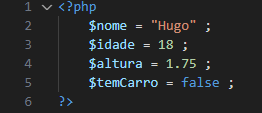
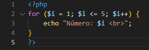
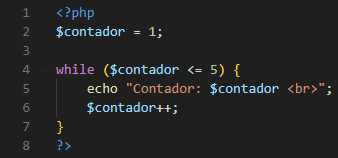

A linguagem de programação PHP (Hypertext Preprocessor) foi criada por Rasmus Lerdorf em 1994. Inicialmente, o PHP era um conjunto de scripts CGI (Common Gateway Interface) escritos em linguagem C, utilizados para rastrear visitantes de seu currículo online. O acrônimo originalmente significava "Personal Home Page" (Página Inicial Pessoal), refletindo o propósito inicial da linguagem.
Com o tempo, a popularidade do PHP cresceu, e a comunidade começou a contribuir para o seu desenvolvimento. Em 1997, dois desenvolvedores, Zeev Suraski e Andi Gutmans, reescreveram o núcleo do PHP e lançaram a versão 3 da linguagem. Essa versão introduziu melhor desempenho, modularidade e suporte a extensões.
Algoritmos
Um algoritmo é um conjunto finito e ordenado de instruções ou regras bem definidas que levam à solução de um problema específico. Essas instruções descrevem um processo passo a passo que, se seguido corretamente, produzirá a saída desejada a partir de dados de entrada específicos.
Primeiro programa
"echo" é um comando, também conhecido como função, que exibe algo para o cliente.
Variáveis
Variáveis são espaços de armazenamento nomeados que representam valores em um programa de computador. Em PHP, seus tipos são: int (números inteiros), float e double (números com casas decimais), boolean (para verdadeiro ou falso), String (caracteres de texto), etc.

Lendo dados do teclado
Em PHP, a linguagem é predominantemente utilizada para scripts web, onde a interação com o usuário geralmente ocorre por meio de formulários HTML
Operadores matemáticos
Operador
Operação
Exemplo
+
Soma
2 + 2 = 4
-
Subtração
10 - 9 = 1
*
Multiplicação
2 * 2 = 4
/
Divisão
9 / 3 = 3
%
Módulo da divisão
4 % 2 = 0
Estrutura condicional
As estruturas condicionais em programação são usadas para tomar decisões com base em certas condições. Em PHP, existem principalmente duas formas de implementar estruturas condicionais: a declaração "if" e a declaração "switch". Vamos dar uma olhada em ambas.
A declaração "if" é usada para executar um bloco de código se uma condição for verdadeira. A declaração "else" pode ser usada para fornecer um bloco de código a ser executado se a condição for falsa. E a declaração "elseif" pode ser usada para verificar soluções encadeadas.
A declaração "switch" é útil quando você tem várias condições a serem testadas em relação a uma única variável.
Operadores de comparação
"==" - Igual a
"!=" - Diferente de
">" - Maior que
"<" - Menor que
">=" - Maior ou igual que
"<=" - Menor ou igual que
IF com "and" e "or"
Utilizado para testar duas condições simultâneamente. Ao utilizar o and, as duas condições precisam ser verdadeiras para entrar na condição, já com o or apenas uma condição precisa ser verdadeira.
Laços de repetição
Existem várias formas de implementar estruturas de repetição (loops) para executar um bloco de código repetidamente até que uma condição seja atendida. Os loops mais comuns são o for, o while e o do-while. Aqui estão exemplos de cada um:
FOR
O loop for é frequentemente usado quando o número de iterações é conhecido antecipadamente.

O primeiro indíce é o inicializador, o precisa ter um valor inicial. O segundo indíce representa a condição, e o terceiro representa o contador.
While
O loop while executa um bloco de código enquanto uma condição específica for verdadeira.

Nesse caso, o laço será executado enquanto a váriavel "contador" for menor, ou igual a 5.
Do-While
O loop do-while é semelhante ao while, mas garante que o bloco de código seja executado pelo menos uma vez antes de verificar a condição.
Conversa informal sobre como está a linguagem PHP atualmente
Conclusão
Este é apenas o começo da sua trajetória para se tornar um programador habilidoso. Se você chegou até aqui, já não é mais um iniciante e está pronto para buscar novos desafios. Conheça nossos outros cursos :